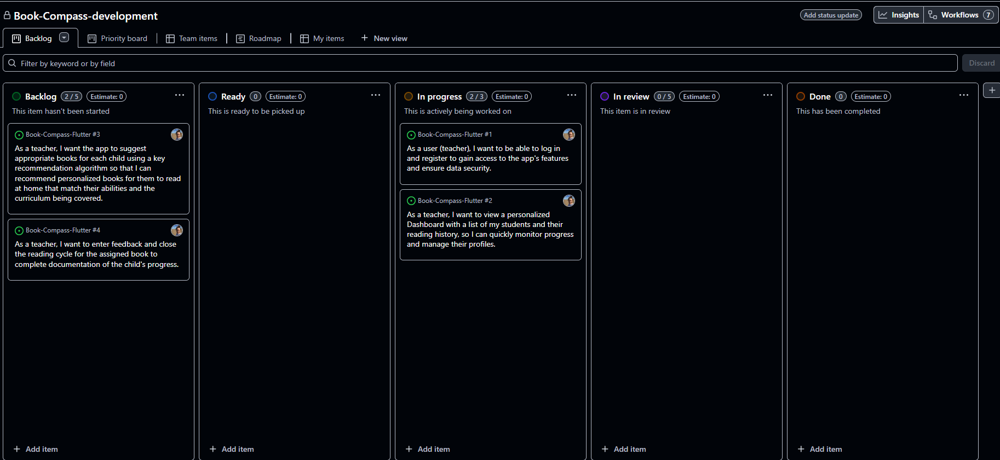
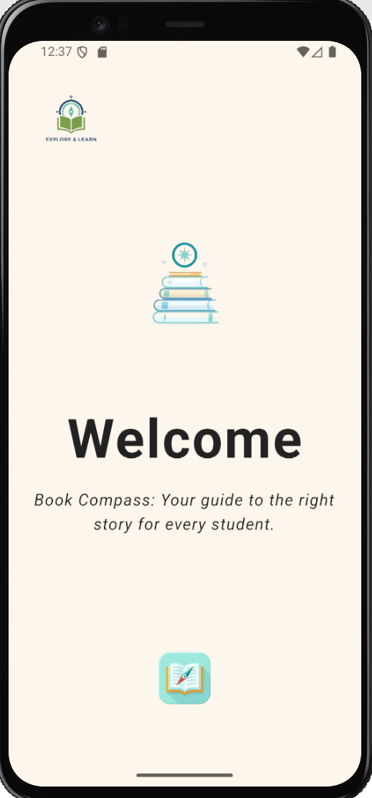

Book Compass: Educational Flutter App
Personalised Book Recommendation System for Teachers

Project Overview
Book Compass is a mobile application developed using the Flutter framework. Its main goal is to provide a data-driven platform for book recommendations. The app allows teachers to track reading progress, manage classroom assignments, and generate personalized suggestions based on each child's reading level and history.
Design & Methodology
The development followed a structured approach, starting with a Requirements Analysis using the MoSCoW method to prioritize core features. To ensure a scalable architecture, I designed UML Component Diagrams and User Journey Maps, which helped in visualizing the interaction between the Teacher dashboard and the Student profiles.
User Interface & Welcome Experience
First impressions are vital in educational tools. The Welcome Screen was designed to be clean and inviting, ensuring that teachers can quickly authenticate and access their classroom data.
I focused on a consistent design language using reusable widgets to maintain a professional look across all screens. The interface prioritizes clarity, reducing cognitive load for educators managing busy classrooms.

Technical Implementation
Key technical highlights include:
- Custom Recommendation Service: An algorithm that suggests books based on a child's reading level and previous history.
- Data Services: Implementing real-time updates for reading feedback and student progress tracking.
Quality Assurance & Bug Tracking
To ensure reliability, I performed rigorous Manual Functional Testing. Every feature was linked to a specific test case to verify its behavior before deployment. I used GitHub Issues and a Kanban board to track the development lifecycle and manage any identified bugs.
| Test ID | Scenario | Expected Result | Status |
|---|---|---|---|
| TC-01 | Teacher logs in successfully | User is redirected to Teacher Dashboard | PASS |
| TC-02 | Teacher views and navigates the dashboard | Dashboard display: Welcome message "Hello 'name'", App logo, Profile icon with menu, Sections: My class, Book tips, Feedback | PASS |
| TC-03 | Recommendations | Algorithm suggests 1 or 2 books per week | PENDING |
Note: Future sprints will focus on fully implementing the recommendation algorithm.